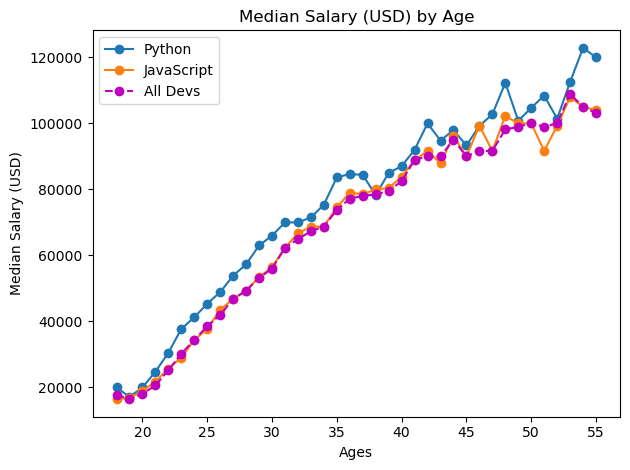
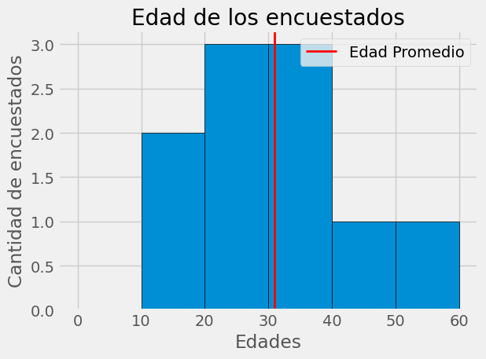

Matplotlib#
{kind=link}
import pandas as pd
import matplotlib
from matplotlib import pyplot as plt
%matplotlib inline
# Restablecer las configuraciones predeterminadas
plt.rcdefaults()
print(plt.style.available)
['Solarize_Light2', '_classic_test_patch', '_mpl-gallery', '_mpl-gallery-nogrid', 'bmh', 'classic', 'dark_background', 'fast', 'fivethirtyeight', 'ggplot', 'grayscale', 'seaborn-v0_8', 'seaborn-v0_8-bright', 'seaborn-v0_8-colorblind', 'seaborn-v0_8-dark', 'seaborn-v0_8-dark-palette', 'seaborn-v0_8-darkgrid', 'seaborn-v0_8-deep', 'seaborn-v0_8-muted', 'seaborn-v0_8-notebook', 'seaborn-v0_8-paper', 'seaborn-v0_8-pastel', 'seaborn-v0_8-poster', 'seaborn-v0_8-talk', 'seaborn-v0_8-ticks', 'seaborn-v0_8-white', 'seaborn-v0_8-whitegrid', 'tableau-colorblind10']
Ploteo#
ages_x = [18, 19, 20, 21, 22, 23, 24, 25, 26, 27, 28, 29, 30, 31, 32, 33, 34, 35,
36, 37, 38, 39, 40, 41, 42, 43, 44, 45, 46, 47, 48, 49, 50, 51, 52, 53, 54, 55]
py_dev_y = [20046, 17100, 20000, 24744, 30500, 37732, 41247, 45372, 48876, 53850, 57287, 63016, 65998, 70003, 70000, 71496, 75370, 83640, 84666,
84392, 78254, 85000, 87038, 91991, 100000, 94796, 97962, 93302, 99240, 102736, 112285, 100771, 104708, 108423, 101407, 112542, 122870, 120000]
plt.plot(ages_x, py_dev_y,marker = 'o', label='Python')
js_dev_y = [16446, 16791, 18942, 21780, 25704, 29000, 34372, 37810, 43515, 46823, 49293, 53437, 56373, 62375, 66674, 68745, 68746, 74583, 79000,
78508, 79996, 80403, 83820, 88833, 91660, 87892, 96243, 90000, 99313, 91660, 102264, 100000, 100000, 91660, 99240, 108000, 105000, 104000]
plt.plot(ages_x, js_dev_y,marker = 'o', label='JavaScript')
dev_y = [17784, 16500, 18012, 20628, 25206, 30252, 34368, 38496, 42000, 46752, 49320, 53200, 56000, 62316, 64928, 67317, 68748, 73752, 77232,
78000, 78508, 79536, 82488, 88935, 90000, 90056, 95000, 90000, 91633, 91660, 98150, 98964, 100000, 98988, 100000, 108923, 105000, 103117]
# a format string consists of a part for color, marker and line:
plt.plot(ages_x, dev_y, color='m', marker = 'o', linestyle='--', label='All Devs')
plt.xlabel('Ages')
plt.ylabel('Median Salary (USD)')
plt.title('Median Salary (USD) by Age')
plt.legend()
plt.tight_layout()
# podemos utilizar cualquier estilo
plt.style.use("ggplot")
plt.show()

Histogramas#
plt.style.use("fivethirtyeight")
ages = [18, 19, 21, 26, 26, 30, 32, 38, 45, 55]
promedio = pd.Series(ages).mean()
print(promedio)
31.0
bins = [0, 10, 20, 30, 40, 50, 60]
plt.hist(ages, bins = bins, edgecolor = "black")
plt.title("Edad de los encuestados")
plt.xlabel("Edades")
plt.ylabel("Cantidad de encuestados")
plt.tight_layout()
color = "red"
plt.axvline(promedio, color = color, label = "Edad Promedio", linewidth = 2)
plt.legend()
plt.show()
